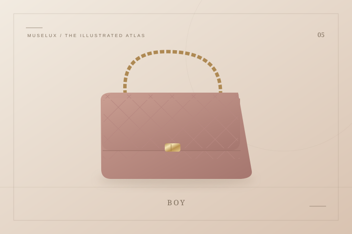
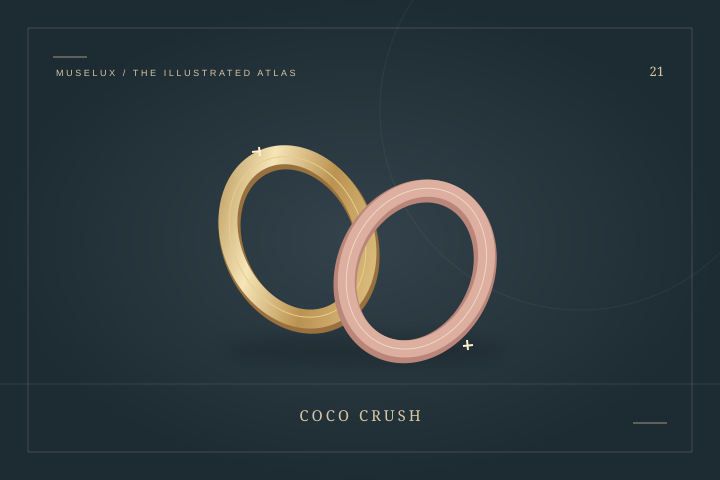

2026 / Most wanted
2026 / Most wantedCHANEL
Maxi Flap Bag — Camel Grained Calfskin (Métiers d’art 2026)
The Maxi Flap makes its point through scale and surface.
US$9,600Explore ↗
Official US suggested retail · checked 19 Oct 2026THE HOUSE / 法国 / EST. 1910
香奈儿 — 把自由，缝进日常的轮廓
一只可以解放双手的肩包，一瓶不直接模仿单朵花的香水，一块轻盈的斜纹软呢：香奈儿的故事，常常从改变穿戴方式开始。嘉柏丽尔·香奈儿最初经营女帽，随后把对身体活动的关注带进服装与配饰。菱格纹、链条与山茶花成为熟悉的符号，却不必同时出现，才能让人认出这种语言。读经典翻盖包时，可以先比较包扣、肩链与比例；看珠宝时，则试着观察弧线怎样贴近手指。与其把所有作品归为一种气质，不如看看它怎样在不同年代重新表达轻松与独立。
A FEW CHAPTERS IN TIME
康朋街女帽店开门
Ernest Beaux 创作的 N°5 香水问世
小黑裙成为品牌服装语言之一
推出 Bijoux de Diamants 钻石珠宝展
二月推出 2.55 肩背手袋
Première 腕表问世
IN THE MUSELUX CATALOG
13 项收录：2 款 The Style Edit 实物款式、6 条年度精选、5 个经典设计词条。年度卡片保留入选年份和美元价格口径。
2026 / Most wantedThe Maxi Flap makes its point through scale and surface.
用一条肩链，把双手还给生活。
打开词条 ↗菱格纹与双字母扣，组成熟悉的一页。
打开词条 ↗
用一道硬朗边框，写出另一种香奈儿。
打开词条 ↗ 2025 / Most wanted
2025 / Most wantedCoco Crush translates the visual softness of quilting into a small, sculptural pendant.
 2024 / Most wanted
2024 / Most wantedCoco Crush translates the visual softness of quilting into a small, sculptural pendant.
 2023 / Most wanted
2023 / Most wantedCoco Crush translates the visual softness of quilting into a small, sculptural pendant.
 THE STYLE EDIT
THE STYLE EDITCoco Crush translates the visual softness of quilting into a small, sculptural pendant.
 2024 / Most wanted
2024 / Most wantedThe mini Coco Crush ring offers a close reading of the collection’s surface.
 2023 / Most wanted
2023 / Most wantedThe mini Coco Crush ring offers a close reading of the collection’s surface.
 THE STYLE EDIT
THE STYLE EDITThe mini Coco Crush ring offers a close reading of the collection’s surface.

把包上的菱格，转成指间的光。
打开词条 ↗KEEP READING